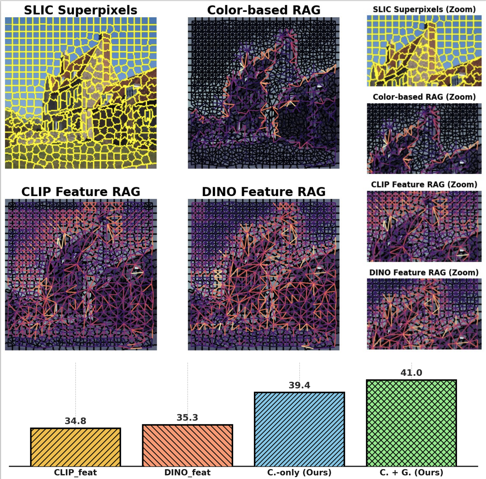
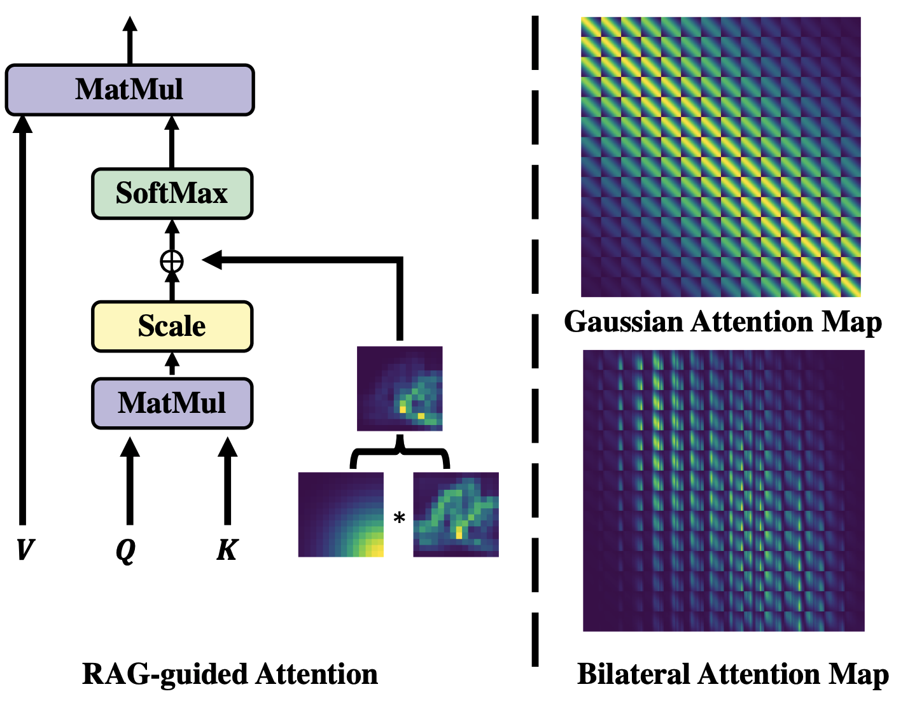
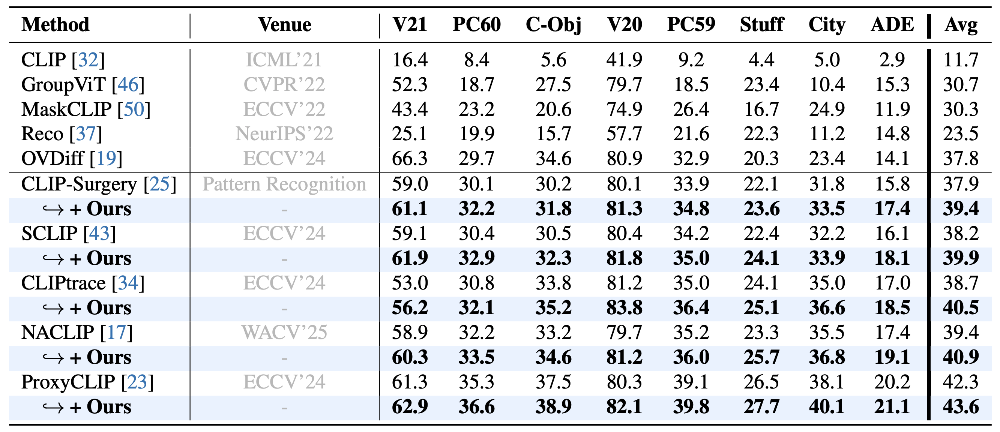
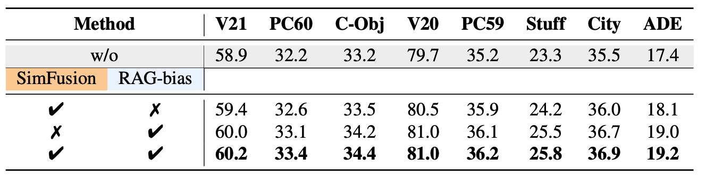
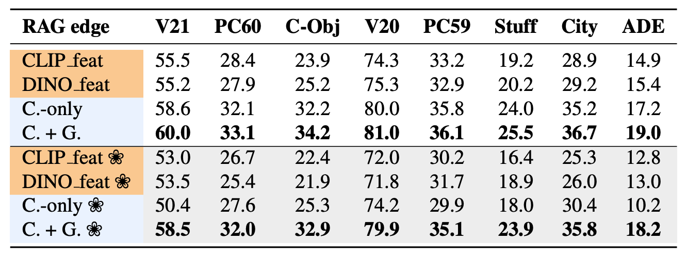
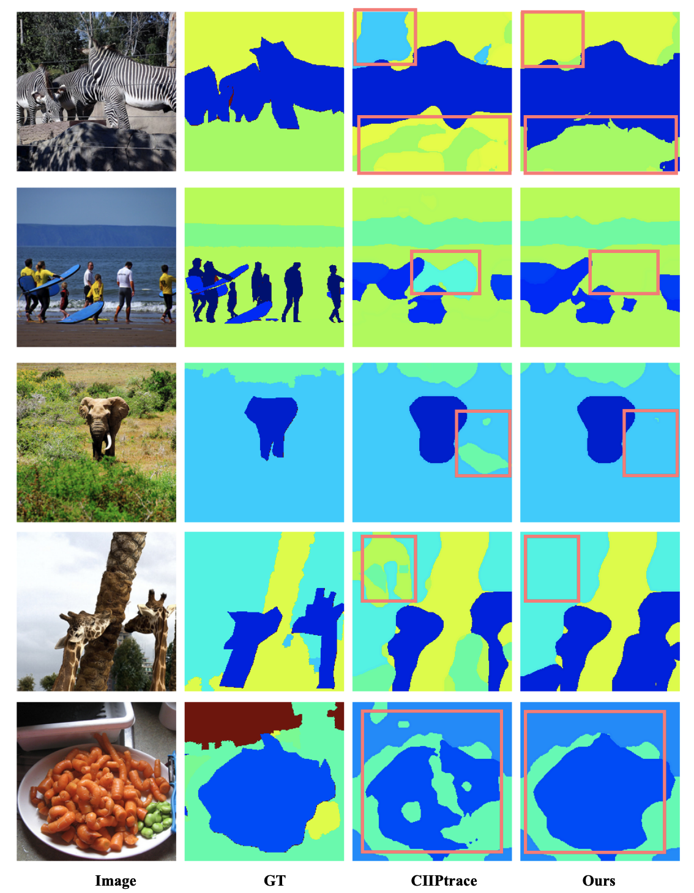

Structure-Aware Feature Rectification with Region Adjacency Graphs for Training-Free Open-Vocabulary Semantic Segmentation
Abstract
Benefiting from the inductive biases learned from large-scale datasets, open-vocabulary semantic segmentation (OVSS) leverages the power of vision-language models, such as CLIP, to achieve remarkable progress without requiring task-specific training. However, due to CLIP’s pretraining on image-text pairs, it tends to focus on global semantic alignment, resulting in suboptimal performance when associating fine-grained visual regions with text. This leads to noisy and inconsistent predictions, particularly in local areas. We attribute this to a dispersed bias stemming from its contrastive training paradigm, which is difficult to alleviate using CLIP features alone. To address this limitation, we propose a structure-aware feature rectification strategy that incorporates instance-specific priors derived directly from the image. Specifically, we construct a region adjacency graph (RAG) based on low-level feature (e.g. colour and texture) to capture local structural relationships and use it to refine CLIP features by enhancing local discrimination. Extensive experiments show that our method effectively suppresses segmentation noise, improves region-level consistency, and achieves strong performance on multiple open-vocabulary segmentation benchmarks.

Method Overview
Illustration of the idea and corresponding performance. High-level feature region adjacency graphs (RAGs) introduce local noise, while low-level colour-based RAGs maintain clean structure. The RAGs built on CLIP and DINO pretrained features exhibit noisy and inconsistent connectivity in local regions (as seen in the zoomed-in areas), when compared to the low-level based one. This highlights the potential of low-level cues for tasks requiring fine-grained local modelling, such as image segmentation. Bottom: Comparison of average performance scores across multiple datasets using different features for RAG construction. C.-only: colour-based features, and C. + G.: colour and texture features.
RAG-guided Attention
Illustration of different attention bias mechanism. The first column shows the input images. The second column visualises the traditional Gaussian kernel, which models spatial proximity in a local window. The third column shows the RAG-bias computed from the Region Adjacency Graph (RAG), capturing structural relationships between neighbouring regions. The fourth column combines both Gaussian kernel and RAG-bias to form a bilateral attention bias, which accounts for both spatial distance and local structure.
Overview of the proposed RAG-guided attention mechanism. The bilateral attention bias is computed by combining a spatial Gaussian kernel with a structure-aware RAG-bias. This combined bias is integrated into the attention weights to enhance structural sensitivity. Right: visualisation of the Gaussian and bilateral attention maps.

Experimental Results

Table 1. Quantitative results on various OVSS benchmarks. Our method consistently improves different CLIP-based baselines across all datasets, demonstrating its generality and effectiveness.

Table 2. Component ablation results based on the NACLIP model.

Table 3. Performance comparison using different feature types to construct RAG edges...

Qualitative Results
The qualitative results of ours method. For more challenging cases, such as grayscale and stylised images (e.g. , oil paintings), please refer to the Supplementary Materials.
Poster
Acknowledgements
This project is partially supported by an Amazon Research Award. Qiming Huang is supported by the China Scholarship Council (Grant No. 202408060321). The computations in this research were performed using the Baskerville Tier 2 HPC service. Baskerville was funded by the EPSRC and UKRI through the World Class Labs scheme (EP\T022221\1) and the Digital Research Infrastructure programme (EP\W032244\1) and is operated by Advanced Research Computing at the University of Birmingham.
BibTeX
@inproceedings{RAG-OVS,
title = {Structure-Aware Feature Rectification with Region Adjacency Graphs for Training-Free Open-Vocabulary Semantic Segmentation},
author = {Huang, Qiming and Ai, Hao and Jiao, Jianbo},
booktitle = {Proceedings of the IEEE/CVF Winter Conference on Applications of Computer Vision (WACV)},
year = {2026}
}